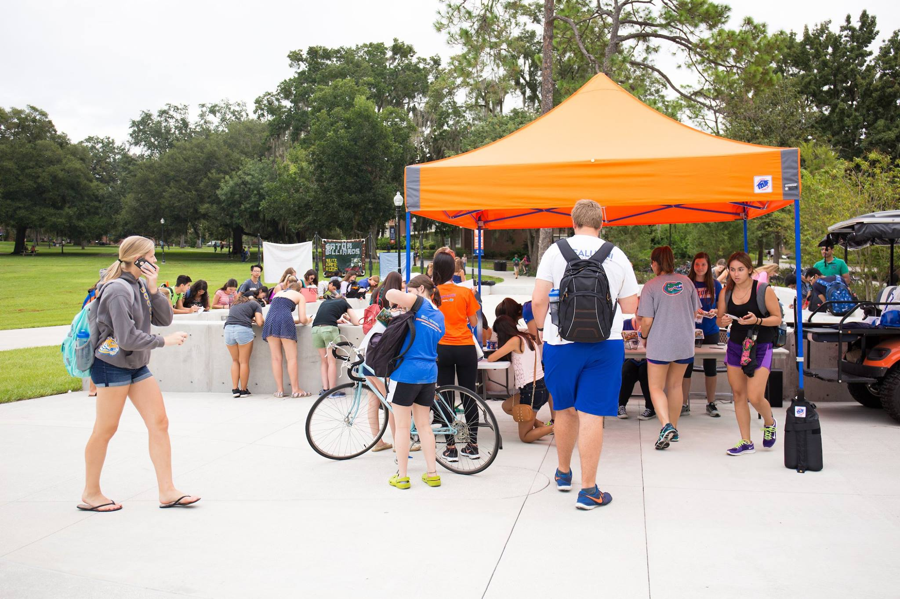
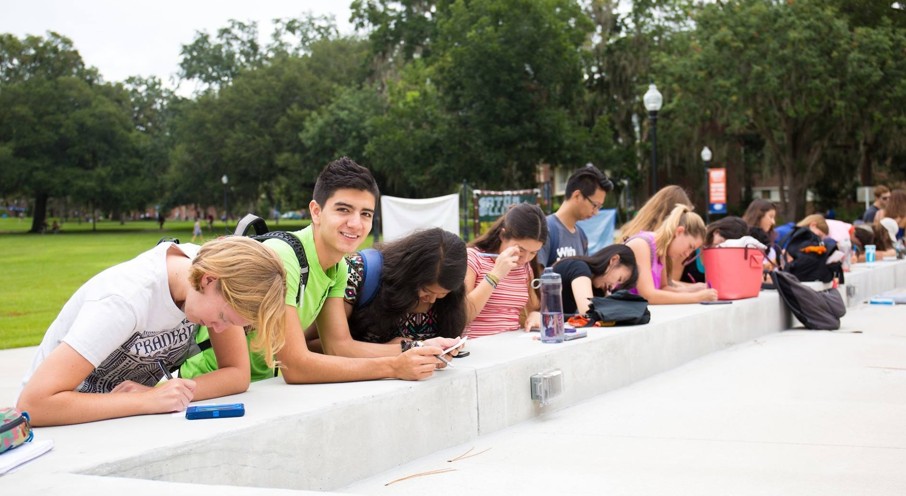
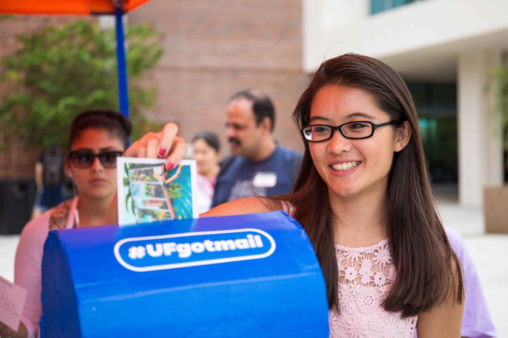
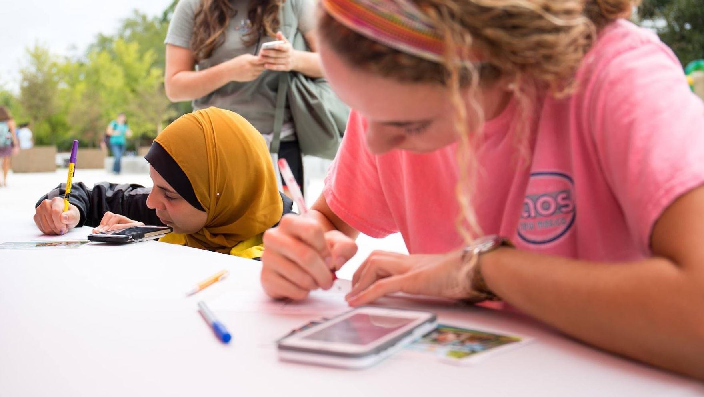

Greetings from Gainesville
A postcard giveaway connects Gators with loved ones around the globe — reaching 41 states and 34 countries.
Parents and grandparents. Favorite teachers and faraway friends. Little brothers and long-distance girlfriends.
During the UF Social Street Team's postcard giveaway, more than 1,200 students wrote messages to people they missed, sharing the excitement of a new semester.




The reach
Their messages traveled to 41 states and 34 countries on six continents. In 10 languages, they sent thanks and love to the people who helped them get here.




The campaign spread organically, no paid media, no influencers, no formal ask. Just students who loved where they were and wanted to share it, proving that Gator Nation is Everywhere.